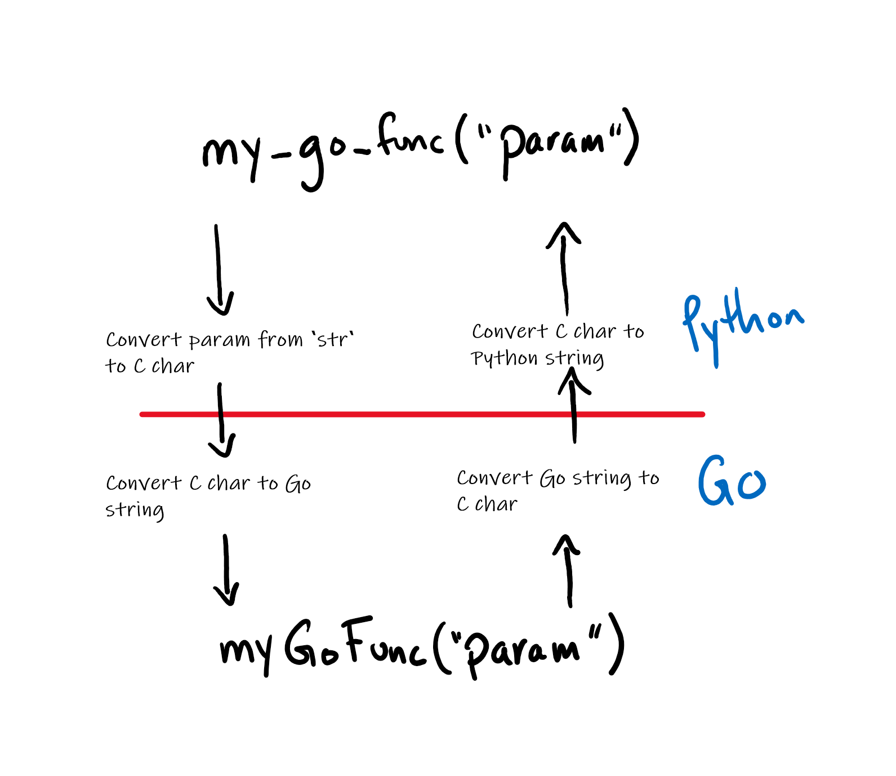
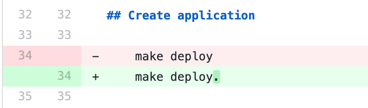
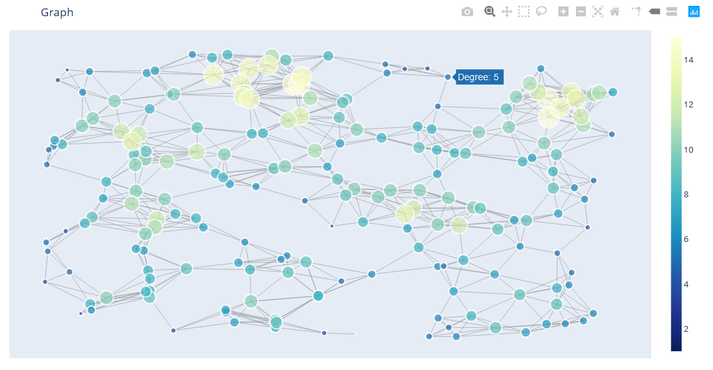

Using Databricks & Prefect to automate your ETL tasks

Create a Python wrapper for functions written in Go.

Guide and tips on how to get started/make a contribution during Hacktoberfest.
Run your Jupyter Notebook as a stand alone web app.
Setup your own Big Data infrastructure at home.

Build interactive graph network visualizations.
Introduction to Aethos Modelling.